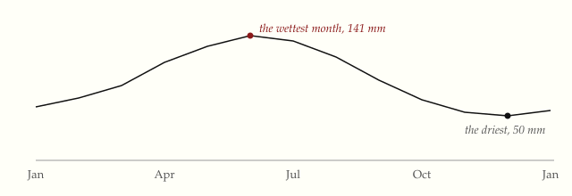

Figures
A figure with a caption, and tables.
A graphic sits in the column of the text, as wide as the text, so that the words and the picture are read together. Its caption is small and in italic.

The figure above has no gridlines and no box. Two labels mark the months that matter, and the reader can find the rest on the line.
Tables
A table has three rules: a heavy one above, a light one under the header, and a heavy one below. There are no lines between the rows, and the numbers line up on the right.
| Book | Year | Pages |
|---|---|---|
| The Visual Display of Quantitative Information | 1983 | 197 |
| Envisioning Information | 1990 | 126 |
| Visual Explanations | 1997 | 156 |
| Beautiful Evidence | 2006 | 213 |
A wide table scrolls in its own box, so the page does not.
| Month | Jan | Feb | Mar | Apr | May | Jun | Jul | Aug | Sep | Oct | Nov | Dec |
|---|---|---|---|---|---|---|---|---|---|---|---|---|
| Rain, mm | 78 | 84 | 93 | 112 | 128 | 141 | 136 | 120 | 98 | 81 | 67 | 50 |
| Days of rain | 11 | 12 | 13 | 15 | 16 | 17 | 17 | 15 | 13 | 11 | 10 | 8 |